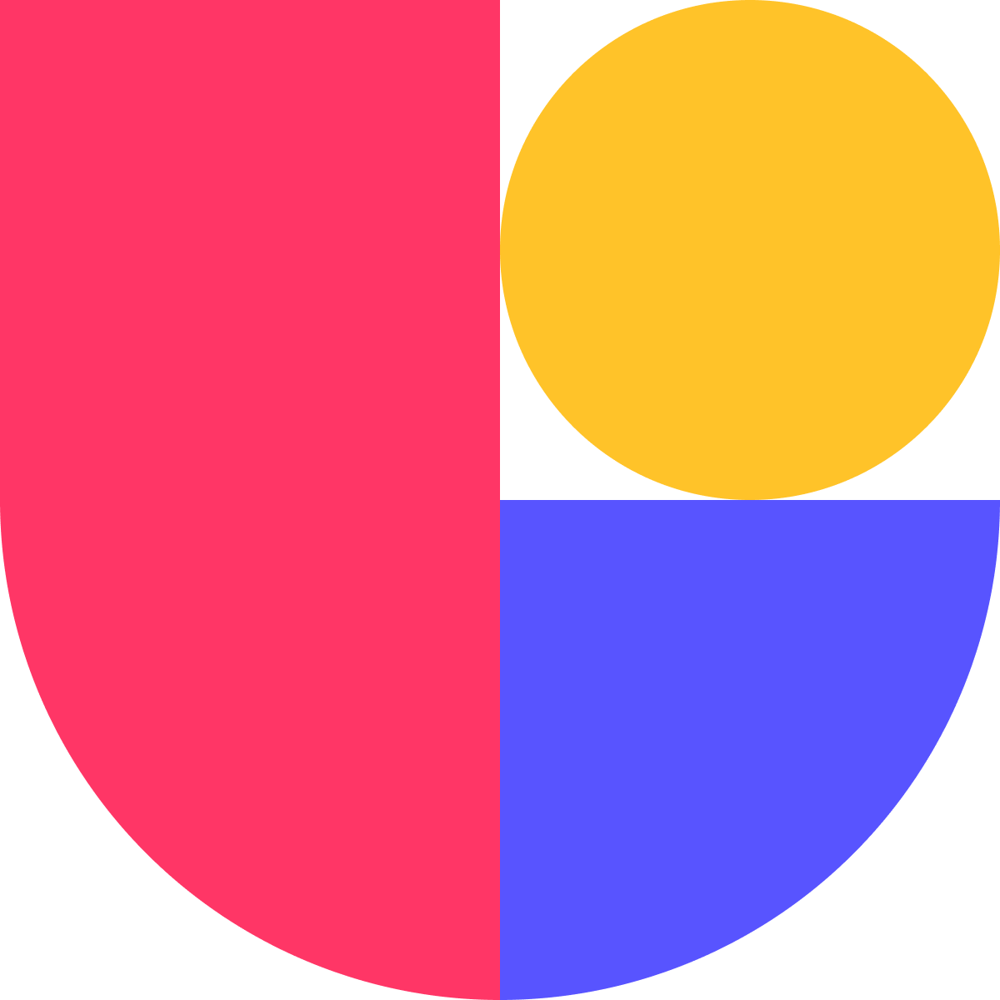
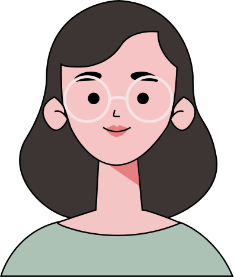
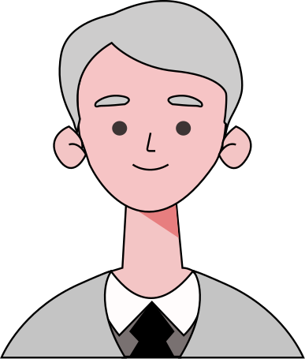
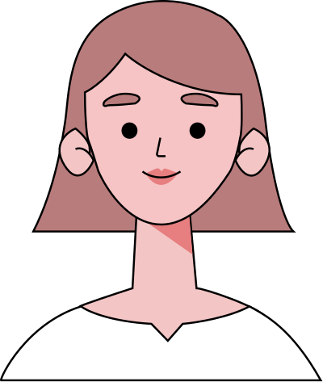

Projects that showcase the range and depth of my craft — from enterprise strategy to platform development.
Enterprise Financial Planning & Forecasting
Led the end-to-end transition from fragmented Excel-based financial planning to a scalable, trusted enterprise platform.
RoleSr. UX Strategist
DurationJul 2024 – Present
Team Size~48
DomainDigital Finance
Tools & Tech
Mandate
Moving financial planning beyond Excel
Excel was the primary tool for financial planning at Novartis, but at global scale it became slow, inconsistent, and difficult to govern.
Finance teams relied on fragmented models for cost management, planning, and forecasting, creating operational risk and heavy dependency on manual reconciliation.
I led the transition from Excel-based planning to a scalable platform, structuring fragmented workflows into a system designed to support global teams and build trust at scale.
Scale & Complexity
The numbers behind the problem.
Countries10+
Finance Teams13+
Excel Sheets150+
Time Lost30–40%
Repetitive Queries60%+
Self-ServiceNegligible
The Real Problem
Not a UI problem. A systems problem.
This wasn't a cosmetic issue; it was a systemic breakdown. Planning, pricing, and forecasting lived in silos owned by different people with zero version control or audit trails.
Every cycle, teams lost days just trying to get global and local numbers to agree. Because there was no way for users to help themselves, our subject-matter experts became human bottlenecks.
Knowledge was trapped in people's heads rather than integrated into the system, making high-stakes scenario planning nearly impossible.
Key Insight
Excel wasn't the enemy; it was the benchmark.
Discovery revealed that teams didn't use Excel because it was efficient—they used it because it was flexible and trusted. To drive adoption, we couldn't just "digitize" spreadsheets; we had to replicate that flexibility while solving for what Excel lacks: Global Governance, Scalability, and Predictive Intelligence.
Next Steps: I architected a three-layered roadmap to transition users responsibly:
Step 1Standardize the Foundation (Governance)
Step 2Sync the Workflows (Global Consistency)
Step 3Layer the Intelligence (AI-driven Forecasting)
Design plan shared with PO for next steps
Strategy
Treat it as a platform, not a tool.
Instead of designing a single solution, I led the work as a platform initiative, sequencing capabilities to reduce risk and drive adoption incrementally.
We mapped legacy Excel workflows end-to-end to understand where trust broke, where manual effort accumulated, and where decisions actually happened. This led to a layered platform strategy — rather than a monolithic product.
Leadership
Ownership across the full initiative.
I led this initiative end-to-end — across discovery, strategy, and experience definition. This was leadership through structure, decisions, and alignment — not just execution.
Problem Framing
Worked with finance and product leaders to reframe the challenge — shifting from "fix Excel" to "build a trusted system" that teams actually want to use.
Platform Strategy & Sequencing
Designed a layered approach that built trust incrementally — starting with governance, then planning, then intelligence. This sequencing reduced risk and drove adoption.
Persona Development
Built detailed personas for planning and forecasting users across different regions and organizational levels to guide design decisions.
KPI Mapping & Standardization
Mapped and standardized KPIs across brands and countries, resolving inconsistencies in how teams defined, measured, and owned metrics.
Tool Integration & Architecture
Defined how Market Model connects with existing data sources like 1DL, Sofia, and Cost Insights. Mapped its role in the broader digital finance workflow with both business and technical teams.
Card Sorting
When subcategories lacked clear KPI definitions, I ran closed card sorting to improve navigation. This helped users discover and understand KPIs within each category more easily.
User Flow Design
Created user flows for targets and scope to clarify processes and improve decision-making. This made the experience more intuitive and efficient for users.
Wireframing & Dot Voting
Started with dot voting sessions to prioritize graph layouts. Used a complex KPI as the foundation, then scaled the approach to 10 additional KPIs.
Design System
Adopted SAP Analytics Cloud's native design system to ensure consistency. This streamlined handoffs, improved scalability, and kept us focused on solving user problems rather than building components.
Design and Prototyping
Designed in Figma based on SAP's limitations and technical feasibility. This ensured our designs could be implemented within the platform's constraints while maintaining a great user experience.
Cross-functional Alignment
Aligned Product, Engineering, AI, and Finance teams across India, Spain, and Switzerland throughout the initiative. This cross-functional collaboration was essential for success.
The Platform
Four layers. One connected system.
Standardized cost data to build trust and governance. Centralized corporate and central costs with consistent structures and reliable reporting.
Forward-looking planning and forecasting capabilities. Demand and pricing scenarios with revenue impact modeling and strategic planning.
Intelligence and optimization for cost management. Granular cost views with optimization opportunities and predictive signals.
RAG-based chatbot reducing support dependency. Answers repetitive finance and tool-related queries with contextual guidance using documentation, dashboards, and definitions.
Survey & User Feedback
Understanding adoption after Phase 1 launch.
After launching Phase 1 of the platform, we conducted a survey to understand how users were adopting the Market Model application. The survey was distributed to 50 users via Microsoft Forms.
Total Respondents34
By Geography25 from Country 9 from Region
By Function27 Finance, 5 BE&E 2 TAs
Top Trends
Excel Dependency
Over 70% of respondents still rely on Excel for scenario modelling and presentations, despite improvements in the online tool.
Satisfaction Scores
Average satisfaction score is 3.4 (on a 1-5 scale), with higher scores linked to better onboarding and support.
Harmonisation Needs
There is a strong call for standardisation of input files, calculation logic, and field names across brands and regions.
Desire for Automation
Users consistently request improvements in tool speed, calculation automation, and reporting capabilities.
Ownership Clarity
Many respondents seek clearer communication and ownership, especially between Finance and BE&E.
Pain Points
Tool Performance
Slow calculations, manual processes, and lack of automation.
Data Quality
Inconsistent actuals, unclear scaling, and harmonisation issues.
Process Clarity
Unclear roles and responsibilities, especially between Finance and BE&E.
Reporting Limitations
Limited visualisation options and export capabilities.
Training & Communication
Insufficient training and unclear communication of deadlines and expectations.
Project Revamp
A new direction.
The survey responses made it clear we needed to rethink our approach. Then, in Phase 2, Novartis shared new brand guidelines. This gave us the opportunity to revamp the project—addressing what users actually needed while aligning with the updated design system.
Outcomes
Before vs. After.
The platform eliminated days of manual reconciliation work. Teams shifted from getting numbers to agree to using those numbers for analysis and strategic decision-making. Subject-matter experts are no longer bottlenecks, and knowledge is now embedded in the system rather than trapped in people's heads.
Before
After
Synthesized capability index for illustration — not literal measured units.
What changed
30–40% time lost→8–12%
60%+ repetitive queries→Handled by DOST
Negligible self-service→Enabled
Capabilities unlocked
4 layers, integrated platform — was 150+ sheets
Full audit trail — was zero visibility
Self-service enabled — was negligible
Testimonials
What stakeholders say.
Feedback from key stakeholders who worked closely on the project.
"
Sameer Ganeshe
Sr. Manager, Market Model
What I appreciated most is he doesn't just take a brief at face value, he'll push back or ask questions if something doesn't line up with what the business actually needs. That saved us more than once. We actually finished ahead of schedule on Market Model and a chunk of that was because he caught requirement gaps early instead of mid-build.
"
SD
Sujoy Das
Sr. Product Manager, Dost
What stands out is how fast he adapts when priorities shift without losing the thread on product consistency. He asks the right questions early and his recommendations are always grounded in what's actually feasible, that's rarer than it sounds.
"
IN
Iulian Niculescu
Principal Engineer, Market Model
Solid, consistently. Takes requirements and turns them into actual structured UX work without much back and forth. He'll also catch a technical or QA issue and bring it up before it becomes anyone else's problem.
"
Lois Ravel
Sr. Product Manager, Market Model
I'll be honest, Market Model wouldn't be where it is without him this year. Priorities kept shifting on us and he never seemed thrown by it kept bringing ideas, kept pushing for us to standardize things properly across the planning tools instead of patching as we went. What I really valued was how he moved between the business side and engineering: QA, feasibility, all of it, without ever losing sight of what the actual user needed. That's not something you can fake.
"
JS
Jorge Lourenço de Sousa
Tech Lead, Market Model
One of the most reliable people I've worked with on complex builds. He doesn't just execute, he flags improvements before they become problems and communicates clearly enough that nothing gets lost in translation.
"
Sameer Ganeshe
Sr. Manager, Market Model
What I appreciated most is he doesn't just take a brief at face value, he'll push back or ask questions if something doesn't line up with what the business actually needs. That saved us more than once. We actually finished ahead of schedule on Market Model and a chunk of that was because he caught requirement gaps early instead of mid-build.
"
SD
Sujoy Das
Sr. Product Manager, Dost
What stands out is how fast he adapts when priorities shift without losing the thread on product consistency. He asks the right questions early and his recommendations are always grounded in what's actually feasible, that's rarer than it sounds.
"
IN
Iulian Niculescu
Principal Engineer, Market Model
Solid, consistently. Takes requirements and turns them into actual structured UX work without much back and forth. He'll also catch a technical or QA issue and bring it up before it becomes anyone else's problem.
"
Lois Ravel
Sr. Product Manager, Market Model
I'll be honest, Market Model wouldn't be where it is without him this year. Priorities kept shifting on us and he never seemed thrown by it kept bringing ideas, kept pushing for us to standardize things properly across the planning tools instead of patching as we went. What I really valued was how he moved between the business side and engineering: QA, feasibility, all of it, without ever losing sight of what the actual user needed. That's not something you can fake.
"
JS
Jorge Lourenço de Sousa
Tech Lead, Market Model
One of the most reliable people I've worked with on complex builds. He doesn't just execute, he flags improvements before they become problems and communicates clearly enough that nothing gets lost in translation.
Reflection
Replacing Excel isn't a UX problem: it's a trust, ownership and system-design problem.
Going in, I assumed the fix was obvious: give people a better interface than Excel and they'd switch. What I didn't get until we were deep into it was that nobody was using Excel because it was good, they were using it because it was theirs. They trusted it, could bend it however they needed and no tool we built was going to win by being stricter than that.
So the real work wasn't removing that flexibility, it was earning the right to replace it building the governance people could actually rely on, the intelligence that made the tool worth the switch and enough self-service that people stopped needing someone else's permission to get an answer. Skip any one of those and you just end up with a nicer-looking spreadsheet that nobody adopts.
That's the thing I carry into every platform or AI project now, the interface is rarely where the real problem lives.
Get in touch
Let's build something like this together.
Open to product design and platform strategy roles, or a conversation about your own data platform problem.
Led the research that turned Forge from an internal platform developers avoided into Atlassian's primary app-development standard.
RoleSr. Product Designer
DurationJan – Jun 2026
Team Size3
DomainDeveloper Experience
Tools & Methods

Mandate
A platform nobody was choosing
I was brought in to help shape a public-facing developer site for Forge, something polished and credible enough to take live externally. Before designing anything, I asked a simpler question: how is it being used internally today?
Digging into usage data and talking to the platform's own founding team gave an answer nobody expected. Internal adoption was effectively zero. Even engineers on adjacent teams weren't aware Forge existed, let alone using it.
That changed the brief entirely. Building a polished public website for a platform nobody inside the company trusted yet would only make the gap more visible. I was brought in to answer a more precise question first: is this an awareness problem, an education problem or a product problem, and where exactly does the funnel break?
Core team and stakeholder map
Approach
Answering that with a process, not a guess.
That question, awareness, education, or product, couldn't be answered by opinion, so I structured the investigation into six deliberate stages: Clarity, Questions, Refinement, Methods, Analysis & Synthesis, Integration. Each stage forced a decision before the next one began, so fieldwork never started on an assumption.
Research Plan
Scale & Complexity
The numbers behind the problem.
To understand how teams were actually using Forge, we rolled out a company-wide survey as the first step, before any interviews or design work. The responses gave us the real shape of the problem.
Frontend Engineers in Scope3,000+
Teams Surveyed182+
New Frontend Repos (prior 2 quarters)8
Using Forge2 Teams
Documentation Source Locations6
The Real Problem
Not a doc problem. Three problems wearing one name.
The instinct was to treat this as a content gap, better docs, problem solved. The data said otherwise. Teams split into three distinct groups: 54% had never heard of Forge, 31% knew it existed but couldn't say what it gave them, and 15% had tried it and hit a wall with no way to get unstuck.
Those aren't variations of one problem, they're three different funnels needing three different fixes. Better documentation only helps the 15% who already tried. It does nothing for the 54% who never knew Forge was an option.
Underneath all three sat a quieter issue: documentation lived across six scattered sources, with no single trusted front door. Even developers who knew Forge existed had nowhere reliable to look.
All frontend engineers100%
54% never heard Forge existed
Aware Forge exists46%
31% couldn't articulate its value
Understood enough to try15%
14% hit a blocker, no way to get unstuck
Actively using Forge≈1%
Underneath every stage: 6 scattered doc sources, no trusted front door.
Archetypes
Who's actually behind the split.
We compared survey answers with real usage and repo data, then checked the patterns statistically. That gave us three clear archetypes, each needing a different fix.

~54%
The Unaware Builder
Has never heard of Forge, or confuses it with an older, deprecated internal tool. Defaults to whatever the team used last time.
Blocked by: Discovery, not ability. No documentation fix reaches this group, they don't know there's anything to read.

~31%
The Curious-but-Unconvinced
Knows Forge exists. Has skimmed a doc or watched a recording once, but can't articulate what it gives them that they don't already have.
Blocked by: Value clarity, not access. More documentation makes this worse unless it leads with the why.

~15%
The Tried-and-Bounced
Actually started a project on Forge. Hit a specific wall, most often custom routing or styling overrides, with no reliable way to get unblocked.
Blocked by: Support, not the product. Smallest group, but the loudest, easy to mistake for the whole problem.
Research Objectives
Knowing who isn't the same as knowing why.
The archetypes told us who was struggling and roughly how many. They didn't tell us why, in their own words, or where exactly things broke down. So before recruiting anyone, I turned that gap into three specific, testable questions, one per archetype, each tied to a decision it would inform.
RQ1 — Awareness
Unaware Builder. At what point does a developer first learn Forge exists, and through what channel?
RQ2 — Comprehension
Curious-but-Unconvinced. Once aware, can developers correctly describe what Forge does, doesn't do, and where its limits are?
RQ3 — Activation & Abandonment
Tried-and-Bounced. Where exactly in the build process do developers who try Forge abandon it, and why?
User Interviews
17 conversations, one question each.
Recruiting followed the archetypes directly, not a fixed number per group, but enough from each to trust the pattern.
Team
Archetype
Interviews
WAC Team
Aware of the platform
8
Loom Team
Knows it exists, unsure what it offers
4
JSM Help Center Team
Knows it, lacks knowledge to use it well
5
Scheduling Across Time Zones
Every team sat in a different zone, IST, AEST, PST, CST, EST, with no single hour that worked for all five. Interviews were run in staggered blocks over several weeks, early mornings and late evenings depending on whose calendar was being worked around that day.
Preparing the Questionnaire
Each team got a version of the same core guide, adjusted for what they could actually speak to, a team that had adopted the platform got asked about friction and gaps; a team that hadn't got asked about discovery and first impressions.
WAC
Adopted
Where does the current setup still fall short of what Next or Remix gave you?
Loom
Aware, unconvinced
How did you first come to learn about the platform and its capabilities?
JSM
Using, but limited
When you hit something the docs didn't cover, what did you do next?
Response Results, what came back
Patterns repeated across teams that had never spoken to each other, which is what made them trustworthy rather than anecdotal.
1
No single place to go.
Loom explicitly said there wasn't one clear offering anywhere, no single page listing everything the platform provides. WAC's second group asked for exactly that: one unified place for every doc, "what we offer, why, how it works."
2
Awareness lagged real capability.
JSM's first group had been using the platform's design-system primitives for months without knowing newer versions or features existed, they'd onboarded once and never heard about anything since.
3
People, not docs, drove adoption.
Every team that succeeded pointed to a specific person who'd helped them directly, Loom found a two-year-old doc and had to track down its author personally to get an accurate picture.
4
Architecture was invisible.
WAC's second group asked directly for a high-level diagram of how everything fit together, "not just request-time, build-time too," because nobody on their team could fully explain what was happening under the hood.
5
Docs existed, but for someone else's use case.
WAC's first group found the documentation was written around one specific internal app; anything outside that shape required guessing.
Synthesis
Turning nine stages of friction into one plan.
After the interviews, I ran a working session with the Head of Engineering, Senior Engineering Managers, and Principal Developers, card sorting the raw findings, ranking them, and ideating on what a fix would actually look like.
Friction level across the journey
Emotion curve across nine stages — friction climbs from curiosity into a sustained anxious peak at Testing through Monitoring.
Working session, raw findings sorted into an impact–effort matrix, then into a single plan
Information Architecture
Mapping 200+ pages, one working session at a time.
Getting this structure right wasn't a single card sort, it took repeated sessions with the platform, security, and DevRel teams, each round exposing another layer of the codebase that needed its own place in the tree. What shipped is a five-level-deep IA spanning every part of how Forge actually works.
Top-level sections5
Pages mapped200+
Max nesting depth5 levels
Working sessions with engineering teams6
Product-specific tutorial tracks8
Tree Test
Proving the structure before spending on it.
With a 200+ page, 5-level IA on the table, rebuilding around it was a real cost: design, development, content migration. Before committing any of that, I ran a tree test to check the structure actually worked, on paper, with nothing designed yet.
1
Methodology
There was no IA to compare against, only six scattered sources. 34 developers ran five tasks in Bitbucket, Confluence, wiki, or GitHub Pages. Then they ran the same tasks on the proposed tree.
→
2
Process
Engineering set a hard gate: no build until the IA hit a success target. The first pass failed. Two tasks scored under 50% because of unclear labels. We renamed them and tested again.
→
3
Outcome
The new IA hit 84% average success, up from 46% on scattered docs. Gave-up rate fell from 21% to 4%. That result unlocked the build budget.
Task success rate by condition
Scattered docs (Bitbucket, Confluence, wiki, GitHub Pages)Proposed IA
Build a hello world app
58%
96%
Migrate a Connect app
27%
85%
Find where to get help
22%
88%
Find app architecture overview
35%
80%
Find platform limits
44%
79%
0%20%40%60%80%100%
Average success rate
46%→84%
Median time to find
71s→22s
Gave-up rate
21%→4%
The Solution
One front door for Forge.
The session converged on one answer: build a single public-facing page for Forge, the front door that had never existed. Every section on that page traces back to something a team actually said.
What Forge is
A plain-language explanation, not a spec sheet.
From research — Finding 1: no single place to go. The page itself is the missing front door.
How to build with it
The fastest possible path from zero to a running app.
From research — Finding 4: architecture was invisible. Builders needed a mental model, not more prose.
Why use it
The case for choosing it over rolling something custom.
From research — Finding 2: awareness lagged capability. Curious-but-Unconvinced teams needed the why first.
Examples
Real apps built on it, not hypothetical ones.
From research — Finding 5: docs existed for someone else's use case. Show work that looks like theirs.
Marketplace apps
What's already live, built by others.
From research — Finding 3: people, not docs, drove adoption. Proof beats pitch.
Tutorial links
Task-based, not module-based.
From research — Card sort / tree test: developers grouped by “what I’m trying to do,” not internal module names.
Roadmap
What's coming next, so teams aren't betting on something that looks abandoned.
From research — WAC: unclear ownership and maintenance. A visible roadmap answers “is this still alive?”
Outcome
What changed.
Consolidated documentation
Collapsed 6 scattered sources into a single docs site, organized by the validated task-based IA, with an architecture-diagram library (the #4 most-requested item).
A real support channel
Replaced the unstaffed Slack channel with a rotating on-call model (1 engineer/week) and a public SLA. Response-within-24h went from 56% to 93%.
Task-oriented tutorials
Built around the specific blockers from interviews (auth scopes, custom routing, styling overrides), not generic "getting started" content.
Onboarding redesign
A guided first-project flow, usability tested across 2 rounds with architecture diagrams at every major decision point.
Onboarding usability, tested across two rounds:
Metric
Round 1
Round 2
SUS score
58
79
Deploy first app unaided
61%
92%
Time to first successful deploy
3.8 days
4.1 hours
Artifact image
New consolidated docs site + architecture-diagram library (before / after)
Impact
Relaunched as Atlassian Forge.
The internal platform was repositioned and relaunched externally as Atlassian Forge, carrying forward the IA, onboarding flow, and support model validated in this research. Tracked via Amplitude and Forge CLI telemetry over 12 months.
Apps Created5,600+
Forge CLI Downloads73,000+
Community Members13,000+
What changed
32% internal adoption→78% within two quarters
44% unanswered support questions→under 7%
3.8 days to first deploy→4.1 hours
Reflection
Low adoption is rarely a communication failure. It's usually a signal that the system hasn't earned trust at the exact moment someone gets stuck.
Going in, the working theory was that Forge had a documentation problem. If I'd taken that at face value, I'd have shipped better docs and moved on, and adoption probably wouldn't have moved, because the docs were a symptom, not the cause.
The finding that redirected the project was the outlier interviews: every team that succeeded had an internal champion. The real gap wasn't information; it was the absence of a reliable path from "stuck" to "unstuck," which is a support and trust problem before it's a content problem. Fixing the docs and the support SLA and the IA together is what moved the number.
The pattern I now carry into every developer-platform project: find the moment someone gets stuck before you redesign anything.
Get in touch
Let's build something like this together.
Open to UX research and developer-experience roles, or a conversation about your own platform adoption problem.
A comprehensive guide to understanding and implementing agentic AI in UX design and product strategy.
01
Mental Model Shift
Days 1–7
02
UX Strategy & Real Application
Days 8–15
03
Strategic & Leadership Lens
Days 16–22
04
Advanced & Visionary Thinking
Days 23–30
Case study view coming next
Appearance
Appearance
Choose how the interface looks. Select Light, Dark, or Auto to match your system.
Theme Mode
Auto mode will match your system's appearance preference.
Accent Color
Pick a highlight color that appears on buttons, links, and interactive elements.
Presets
Custom Hue
Choose a preset or drag the slider to pick any hue across the spectrum.
Typography
Choose a typeface that's used across the entire interface.
Font Family
Applied to all headings, body text, and UI elements
The quick brown fox jumps over the lazy dog.
Preview — current font family
Text Size
Make text larger or smaller across the interface to suit your preference.
Text Scale
Normal (1x)
Compact
NormalComfortable
Large
Drag the slider or click a label below to set the preferred reading size.
Wallpaper
Set a desktop wallpaper. The selected image appears behind all content.
Click a wallpaper to apply it instantly. The active one is marked with a checkmark.
About
Personal OS
Version 1.0
Designed & built by Shivanshu Mathur
A personal dashboard inspired by the elegance of modern OS interfaces, crafted with care for every pixel.
Reset All Settings
Restore all preferences to their defaults
Chat Assistant
AI
Hi! I'm your AI assistant. How can I help you today?
Survey Results
What the survey revealed.
The survey was rolled out to 3,000+ engineers across the org. 2,309 responded, a 77% response rate, giving us confidence the findings weren't a sampling artifact.
3,000+
Invited
2,309
Responded
77%
Response rate
Almost nobody was using it.
How are you currently using Forge?
Never tried 94%Tried, stopped 4%Actively using 1%
94% had never even tried Forge. Active usage rounded to 1%.
How are you currently using Forge? (percent of respondents)
Status
Percentage
Never tried
94%
Tried, stopped
4%
Actively using
1%
Awareness broke first.
What best describes your relationship with Forge?
54%
Never heard of it
31%
Heard of it, unclear value
15%
Tried it, hit a blocker
More than half had never heard of it. The funnel was leaking at discovery, long before any product gap.
What best describes your relationship with Forge? (percent of respondents)
Response
Percentage
Never heard of it
54%
Heard of it, unclear value
31%
Tried it, hit a blocker
15%
Six places, no front door.
"If you needed to find Forge documentation today, where would you look first?"
Bitbucket
28%
Confluence
24%
Internal wiki
19%
GitHub Pages
14%
Internal tools portal
9%
Not sure / other
6%
No single source crossed 30%. Developers had no reliable default place to look.
If you needed to find Forge documentation today, where would you look first? (percent of respondents)